0. Словарь
| Слово | Простыми словами |
|---|---|
| Внешний отчёт | Отчёт в отдельном файле. В конфигурацию не входит, открывается в любой базе с подходящей конфигурацией |
.erf |
Файл внешнего отчёта (External Report File). У внешней обработки — .epf |
| Проект внешнего отчёта | В EDT каждый внешний отчёт — отдельный проект. Один проект — один отчёт |
| Базовый проект | Конфигурация, к которой привязан внешний отчёт. От неё берутся справочники, документы и регистры для запроса |
| Выгрузка в XML | EDT сохраняет отчёт в виде папки с XML-файлами. Это исходники, а не готовый .erf |
| Сборка | Превращение XML-файлов в один файл .erf. Делает платформа 1С, а не EDT |
| Пакетный режим | Запуск 1С без окон: команда «сделай и закройся». Так работает наш скрипт сборки |
| Скрипт | Файл с командами для Mac. Двойной клик — и команды выполняются по очереди |
| Диаграмма | Элемент структуры отчёта СКД, рядом с группировками. Рисует данные картинкой |
| Точки | Что откладывается по горизонтали. У нас — товары: столбик на каждый товар |
| Серии | Разбивка внутри точки: несколько столбиков разного цвета. У нас не используем, столбик один — Сумма |
| Тип диаграммы | Гистограмма, круговая, график и т. д. Задаётся в «Других настройках» |
| Транслит | Русские буквы, записанные латиницей: ПриходыПоТоварам → PrihodyPoTovaram |
1. Что это, зачем, где найти
Какую проблему решаем
Клиенту нужен новый отчёт. У него типовая ЗГУ или БГУ, она на поддержке: фирма 1С выпускает обновления, и франчайзи их ставит. Если добавить отчёт прямо в конфигурацию:
- конфигурацию придётся снять с поддержки или включить возможность изменений;
- каждое обновление станет дольше и дороже: надо сравнивать и объединять изменения;
- ошибка в отчёте — это правка конфигурации и обновление базы.
Решение — внешний отчёт. Отчёт лежит отдельным файлом. Конфигурацию не трогаем. Исправили — отдали новый файл.
На практике во франчайзи большинство доработок для госсектора — внешние отчёты и обработки. Поэтому задача 🔥.
Внешний отчёт или отчёт в конфигурации
| Отчёт в конфигурации (4.1–4.3) | Внешний отчёт (4.4а) | |
|---|---|---|
| Где живёт | Внутри конфигурации Uchebnaya |
Отдельный файл .erf |
| Меняет конфигурацию | Да | Нет |
| Как доставить клиенту | Обновить конфигурацию базы | Передать файл |
| Как открыть | Раздел в интерфейсе | «Файл» → «Открыть» (4.4а) или через БСП (4.4б) |
| Схема, запрос, настройки | СКД | Та же СКД, всё как в 4.1–4.3 |
Главная мысль: внутри это такой же отчёт на СКД. Новое только в том, как его создать, собрать и открыть.
Как это устроено в EDT
В Конфигураторе внешний отчёт создаётся сразу файлом .erf. В EDT иначе:
- Отчёт — это отдельный проект в EDT, привязанный к базовому проекту
Uchebnaya. - EDT умеет выгрузить его только в XML-файлы (исходники).
- Из XML файл
.erfсобирает платформа 1С в пакетном режиме. - Готовый
.erfоткрываешь в предприятии.
Аналогия: XML — это рукопись книги по главам, .erf — переплетённая книга. Править удобно рукопись (и хранить её в Git), а читателю отдают книгу.
Весь путь одной схемой
EDT: проект ПриходыПоТоварам
│ правый клик → Экспорт → «Внешние обработки и отчеты»
▼
~/1C/ext/ExternalReports/ПриходыПоТоварам.xml (+ папка)
│ двойной клик по ~/1C/build-erf.command
▼
~/1C/ext/build/PrihodyPoTovaram.erf
│ предприятие: «Файл» → «Открыть»
▼
Отчёт на экране
2. Как сделать
Карта шагов
Сначала весь план, потом каждый шаг подробно. Номер шага — ссылка на него.
Этап 1. Делаем отчёт (шаги 1–6)
| Шаг | Что делаем | Зачем |
|---|---|---|
| 1 | Создаём проект внешнего отчёта | Отчёт должен жить отдельно от Uchebnaya, иначе он станет частью конфигурации |
| 2 | Создаём схему компоновки данных | В схеме всё содержимое отчёта: запрос, поля, структура. Без неё отчёт пустой |
| 3 | Пишем запрос | Говорим, откуда брать данные: строки проведённых приходов за период |
| 4 | Ресурсы и параметры | Итоги по товару и «Итого»; один «Период» вместо двух дат |
| 5 | Таблица | Строка на каждый товар; разбираемся с уровнями настроек — это нужно для диаграммы |
| 6 | Диаграмма | Те же данные картинкой: разницу между товарами видно сразу |
Этап 2. Превращаем отчёт в файл (шаги 7–9)
| Шаг | Что делаем | Зачем |
|---|---|---|
| 7 | Выгружаем в XML | Предприятие открывает только .erf, а EDT умеет выгружать только XML |
| 8 | Разбор «Выполнить как» | Показываем, почему этот путь не работает, чтобы не тратить на него время |
| 9 | Собираем .erf |
Платформа 1С делает из XML один файл; скрипт избавляет от длинной команды |
Этап 3. Проверяем (шаг 10)
| Шаг | Что делаем | Зачем |
|---|---|---|
| 10 | Открываем в предприятии | Убеждаемся, что файл работает в базе так же, как будет у клиента |
Схема всего пути — в разделе 1, «Весь путь одной схемой».
Шаг 1. Создать проект внешнего отчёта
Зачем. Если создать отчёт внутри Uchebnaya, он станет частью конфигурации — как раз этого внешний отчёт избегает. Поэтому делаем отдельный проект, но привязываем его к Uchebnaya, чтобы в запросе были видны её документы.
Что получим: в навигаторе новый проект ПриходыПоТоварам с одним пустым отчётом.
Что делаем. «Файл» → «Новый» → «Другое…».
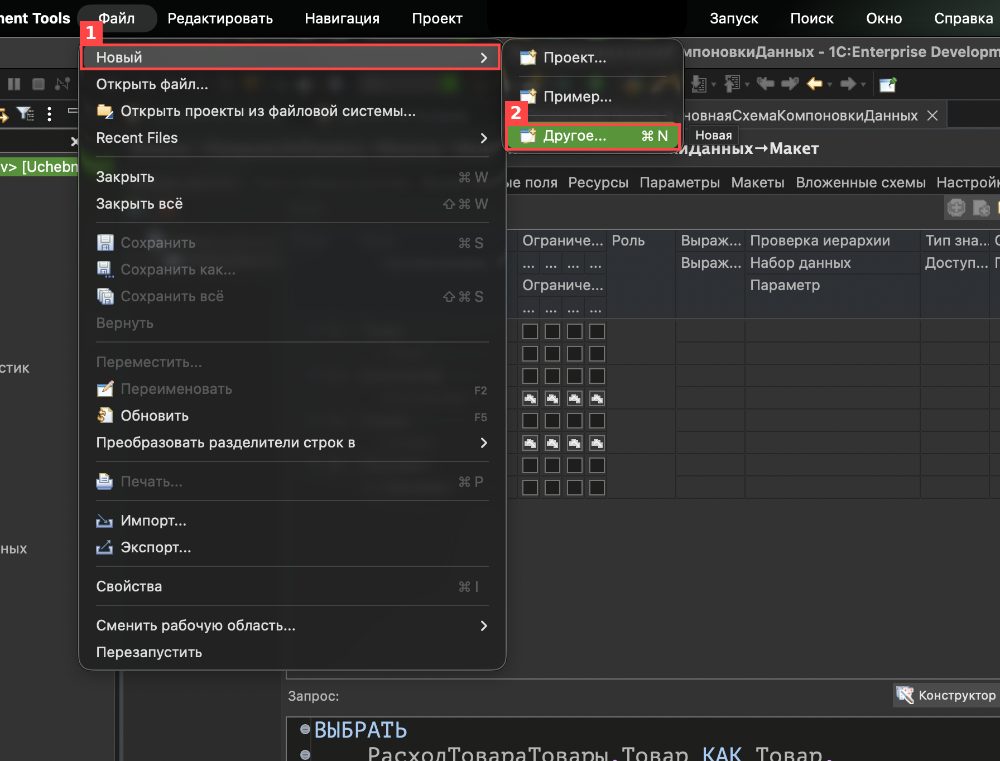
| № | Что это |
|---|---|
| 1 | «Файл» → «Новый» |
| 2 | «Другое…» (Cmd+N) — открывает список всех мастеров создания |
Почему не «Проект…»: там общий мастер Eclipse. Проекты 1С лежат в отдельной папке мастеров.
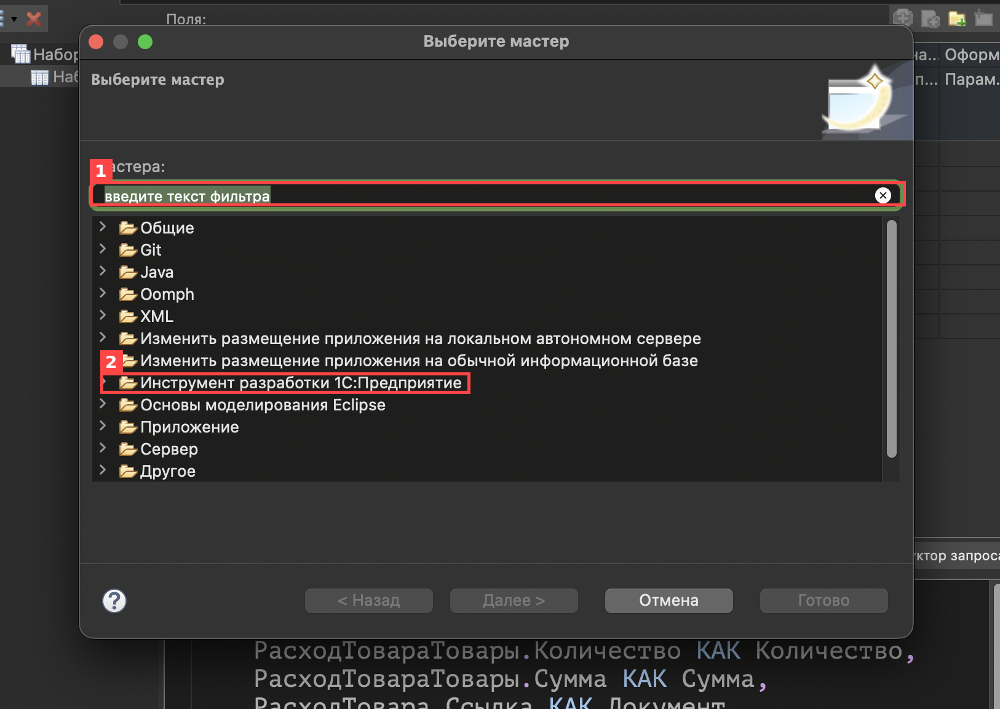
| № | Что это |
|---|---|
| 1 | Поле фильтра — сюда можно ввести часть названия |
| 2 | Папка «Инструмент разработки 1С:Предприятие» — все мастера 1С |
Проще ввести в фильтр слово «Проект»:
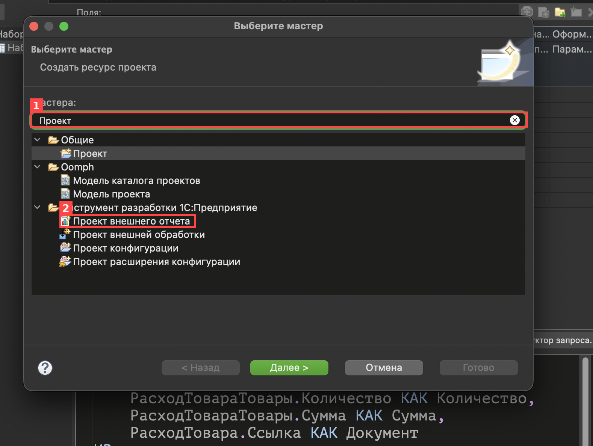
| № | Что это |
|---|---|
| 1 | Фильтр «Проект» |
| 2 | «Проект внешнего отчета». Рядом — «Проект внешней обработки» (для .epf), «Проект конфигурации» и «Проект расширения». Выбираешь, жмёшь «Далее» |
Заполняем мастер.
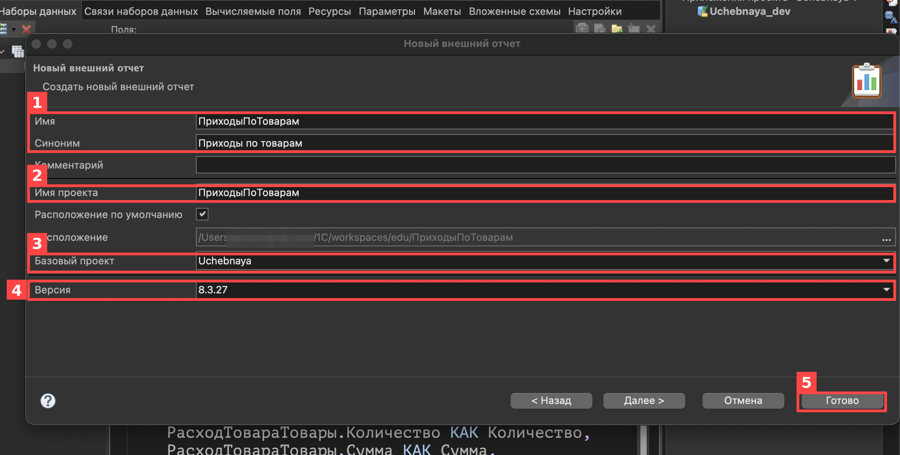
| № | Что это |
|---|---|
| 1 | Имя ПриходыПоТоварам — имя самого отчёта. Синоним «Приходы по товарам» — его видит пользователь в заголовке формы |
| 2 | Имя проекта — имя проекта в EDT и папки на диске. EDT подставляет его из имени отчёта. Оставляем так |
| 3 | Базовый проект Uchebnaya — без него в запросе не будет наших документов и справочников |
| 4 | Версия 8.3.27 — версия платформы, под которую собирается отчёт. Должна совпадать с твоей платформой, потому что файл под более новую версию твоя 1С не соберёт и не откроет |
| 5 | «Готово». Можно нажать «Далее» и посмотреть страницу стандартов |
Что значат поля:
| Поле | Что будет, если ошибиться |
|---|---|
| Имя | Отчёт будет называться не так. Переименовать можно, но проще пересоздать (ловушка 1) |
| Имя проекта | Только имя в EDT. На работу отчёта не влияет |
| Базовый проект | Пусто — отчёт «ни к чему не привязан», в запросе нет ПриходТовара (ловушка 2) |
| Версия | Выше твоей платформы — твоя 1С не сможет собрать и открыть отчёт (ловушка 2) |
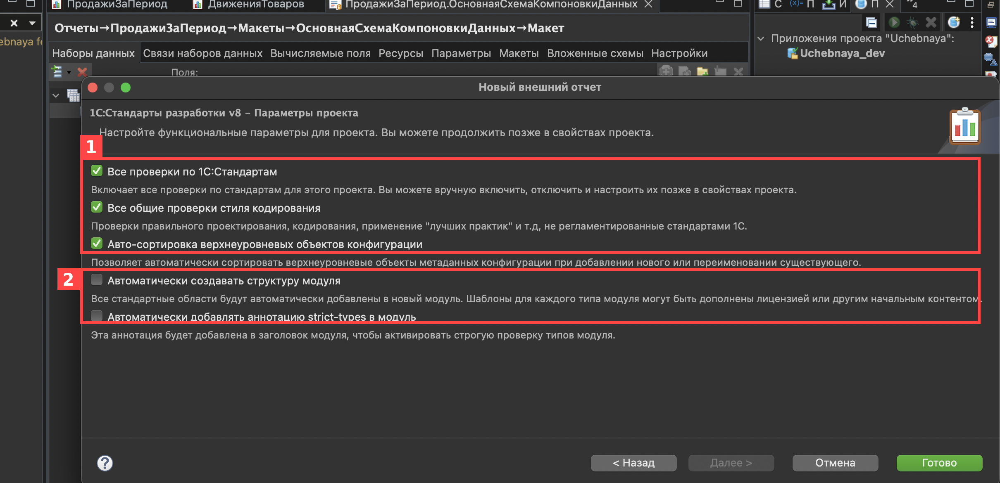
| № | Что это |
|---|---|
| 1 | Включены: проверки по стандартам 1С, общие проверки стиля кода, авто-сортировка объектов. Оставь — EDT будет подсказывать ошибки в коде |
| 2 | Выключены: автоматическая структура модуля и аннотация strict-types. Для учебных отчётов не нужны, оставь как есть |
После «Готово» в навигаторе появляется новый проект.
Шаг 2. Создать схему компоновки данных
Зачем. Сам по себе отчёт — пустая оболочка. Запрос, поля, итоги и вид таблицы хранятся в схеме компоновки данных. Без схемы «Сформировать» ничего не выведет.
Что получим: открытый редактор схемы — тот же, что в 4.1.
Что делаем. В навигаторе раскрой проект ПриходыПоТоварам → «Отчеты» → ПриходыПоТоварам, двойной клик. Откроется редактор отчёта.
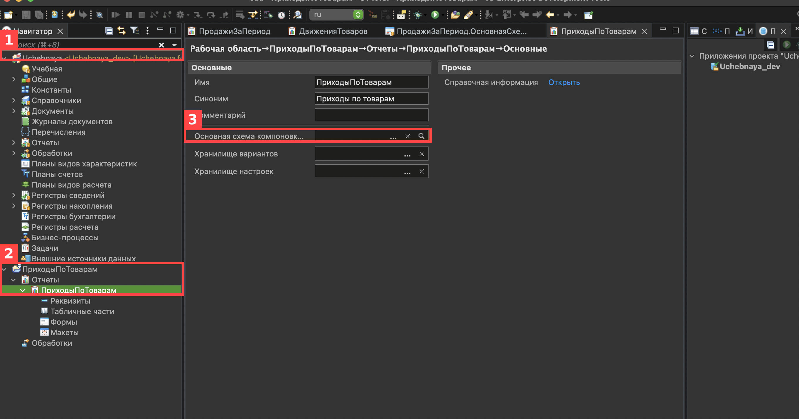
| № | Что это |
|---|---|
| 1 | Проект конфигурации Uchebnaya — базовый |
| 2 | Проект внешнего отчёта ПриходыПоТоварам. Внутри одна ветка «Отчеты» и один отчёт. Других объектов (справочников, документов) нет — они берутся из базового проекта |
| 3 | Поле «Основная схема компоновки данных». Пока пустое. Кнопка справа в поле создаёт схему — как в задаче 4.1 |
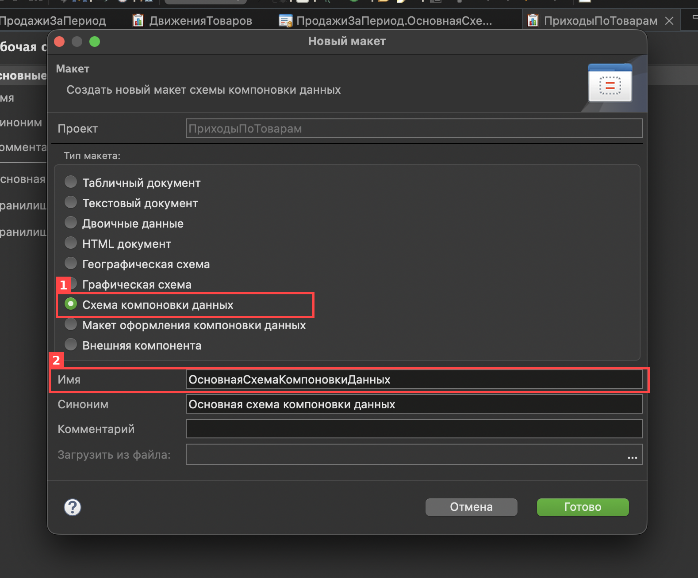
| № | Что это |
|---|---|
| 1 | Тип «Схема компоновки данных» |
| 2 | Имя ОсновнаяСхемаКомпоновкиДанных — оставляем по умолчанию |
«Готово» → откроется редактор схемы. Дальше всё как в 4.1.
Шаг 3. Запрос
Зачем. Отчёт должен знать, какие данные показывать. Берём строки приходов (товар, количество, сумма) и сразу отсекаем черновики и документы вне периода.
Что получим: набор данных с полями Товар, Количество, Сумма и параметрами НачалоПериода и КонецПериода.
Что делаем. «Наборы данных» → добавить «Набор данных – запрос» → «Конструктор запроса…».
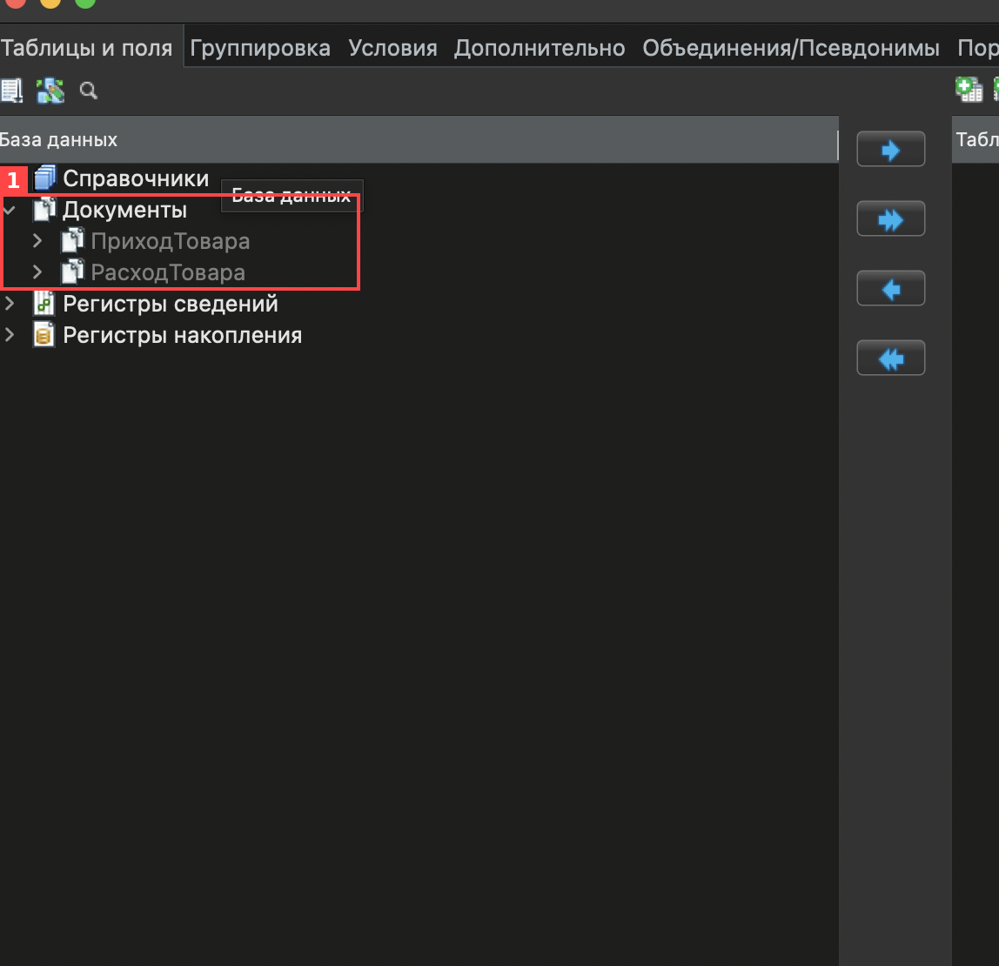
| № | Что это |
|---|---|
| 1 | «Документы» → ПриходТовара, РасходТовара. Это объекты Uchebnaya: внешний отчёт видит их через базовый проект |
Берём табличную часть ПриходТовара.Товары: поля Товар, Количество, Сумма. Условия — период и проведённость.
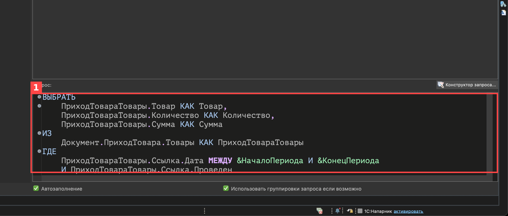
| № | Что это |
|---|---|
| 1 | Запрос: товары из приходов за период, только проведённые документы |
ВЫБРАТЬ
ПриходТовараТовары.Товар КАК Товар,
ПриходТовараТовары.Количество КАК Количество,
ПриходТовараТовары.Сумма КАК Сумма
ИЗ
Документ.ПриходТовара.Товары КАК ПриходТовараТовары
ГДЕ
ПриходТовараТовары.Ссылка.Дата МЕЖДУ &НачалоПериода И &КонецПериода
И ПриходТовараТовары.Ссылка.Проведен
Почему Ссылка.Проведен: непроведённый документ — черновик. Если его не отсечь, отчёт покажет приход, которого на складе нет.
Шаг 4. Ресурсы и параметры
Зачем. Ресурсы складывают количество и сумму по каждому товару и дают строку «Итого»; без них диаграмме нечего рисовать. Параметры — чтобы пользователь выбирал один период, а не две даты.
Что получим: две строки на вкладке «Ресурсы» и один видимый параметр «Период».
Что делаем. Всё как в 4.1 и 4.2.
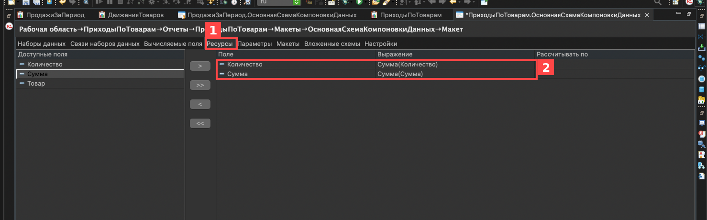
| № | Что это |
|---|---|
| 1 | Вкладка «Ресурсы» |
| 2 | Сумма(Количество) и Сумма(Сумма). Без ресурсов не будет итогов по товару и строки «Итого», а диаграмме нечего будет рисовать |
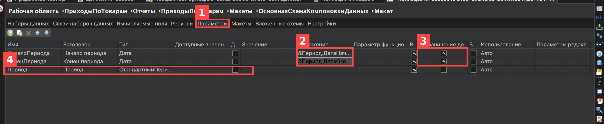
| № | Что это |
|---|---|
| 1 | Вкладка «Параметры» |
| 2 | Выражения: &Период.ДатаНачала и &Период.ДатаОкончания. Начало и конец берутся из параметра Период |
| 3 | «Ограничение доступности» у НачалоПериода и КонецПериода — пользователь их не видит, он выбирает один Период |
| 4 | Параметр Период типа «Стандартный период» — добавлен вручную, как в 4.1 |
Что будет без шага: пользователь увидит три поля дат вместо одного периода, или отчёт выдаст пусто, потому что даты не заданы.
Шаг 5. Таблица: уровень «Отчет» и уровень группировки
Зачем. Задаём, как данные выводятся — строка на каждый товар. Уровни настроек разбираем сейчас, потому что в шаге 6 появится диаграмма, и отбор должен действовать на неё тоже.
Что получим: в структуре группировка Товар; на уровне «Отчет» — поля и отбор в быстром доступе.
Что делаем. «Настройки» → добавить группировку Товар. На уровне «Отчет» — выбранные поля и отбор по Товар с режимом «Быстрый доступ» (как в 4.3).
Здесь важно понимать, на каком уровне ты стоишь. Нижняя часть «Настроек» меняется в зависимости от того, что выделено в дереве структуры. Подсказка — набор вкладок:
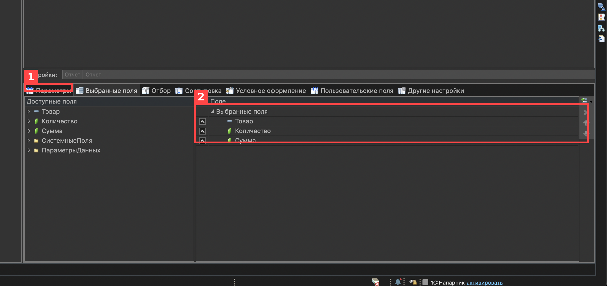
| № | Что это |
|---|---|
| 1 | Есть вкладка «Параметры» → ты на уровне «Отчет». Параметры бывают только у всего отчёта |
| 2 | Выбранные поля отчёта: Товар, Количество, Сумма |
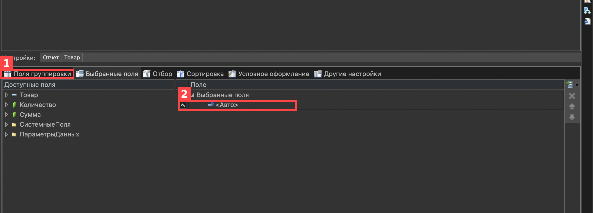
| № | Что это |
|---|---|
| 1 | Есть вкладка «Поля группировки» → ты на уровне группировки |
| 2 | Выбранные поля <Авто> — группировка берёт поля с уровня «Отчет» |
| Признак | Уровень |
|---|---|
| Вкладка «Параметры» | Отчет |
| Вкладка «Поля группировки» | Группировка |
| Вкладки «Точки», «Серии» не видны, но в шапке «Диаграмма» | Диаграмма |
Почему это важно: отбор и выбранные поля, заданные на уровне группировки, действуют только на неё. Диаграмма — отдельный элемент структуры, она их не увидит (ловушка 8). Всё общее ставим на уровень «Отчет».
Шаг 6. Диаграмма
Зачем. По таблице трудно сразу увидеть, какой товар даёт основную сумму, а по столбикам — легко.
Что получим: в структуре два элемента — таблица Товар и диаграмма с точками по товарам.
Что делаем. Выдели корень «Отчет» → кнопка добавления элемента структуры → «Новая диаграмма».
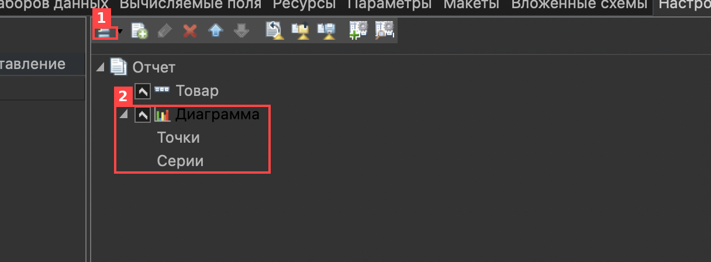
| № | Что это |
|---|---|
| 1 | Кнопка добавления элемента структуры (со стрелкой — выбор: группировка, таблица, диаграмма) |
| 2 | Элемент «Диаграмма» рядом с группировкой Товар, у него две ветки: «Точки» и «Серии» |
Структура теперь такая:
Отчет
├─ Товар ← таблица: строка на товар + «Итого»
└─ Диаграмма ← картинка по тем же данным
├─ Точки → Товар
└─ Серии (пусто)
Точки. Правый клик по «Точки» → «Новая группировка» → поле Товар.
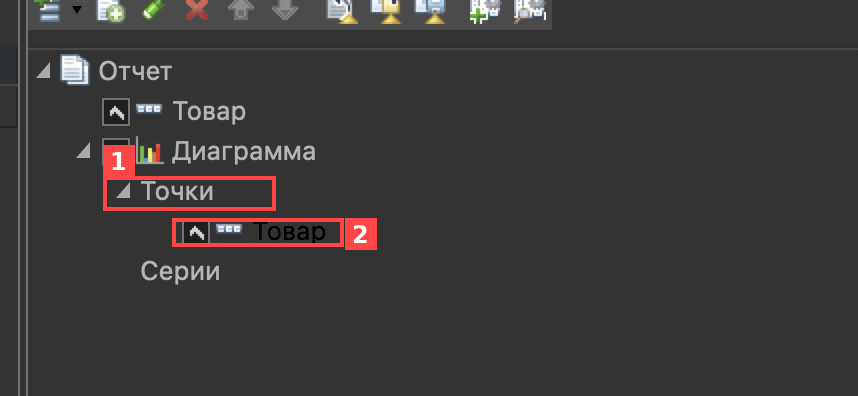
| № | Что это |
|---|---|
| 1 | «Точки» — то, что идёт по горизонтали |
| 2 | Группировка Товар: на каждый товар — свой столбик |
Куда поставить Товар |
Что получится |
|---|---|
| В «Точки» | По горизонтали Мышь и Ноутбук, по столбику на каждый |
| В «Серии» | Одна точка, внутри цветные столбики Мышь и Ноутбук с легендой по товарам |
| Никуда | Один столбик — общая сумма за период |
Что рисовать. Выдели «Диаграмма» → вкладка «Выбранные поля» → оставь только Сумма.
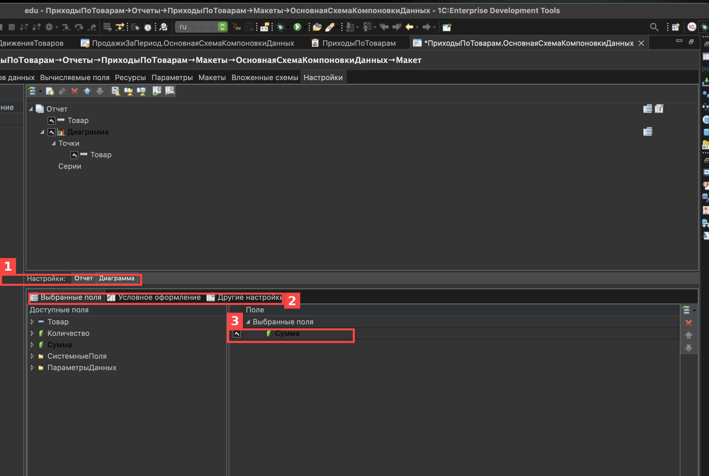
| № | Что это |
|---|---|
| 1 | Шапка «Настройки: Отчет Диаграмма» — ты на уровне диаграммы |
| 2 | Вкладки уровня диаграммы: «Выбранные поля», «Условное оформление», «Другие настройки» |
| 3 | Выбранное поле — только Сумма. Это высота столбика |
Почему не <Авто>: тогда на диаграмму попадут и Количество, и Сумма. Шкала одна: 30 штук рядом с 300 000 рублей — столбики количества будут не видны, а легенда запутает.
Тип диаграммы. Выдели «Отчет» → «Другие настройки» → строка «Тип диаграммы» → галка → «Гистограмма».
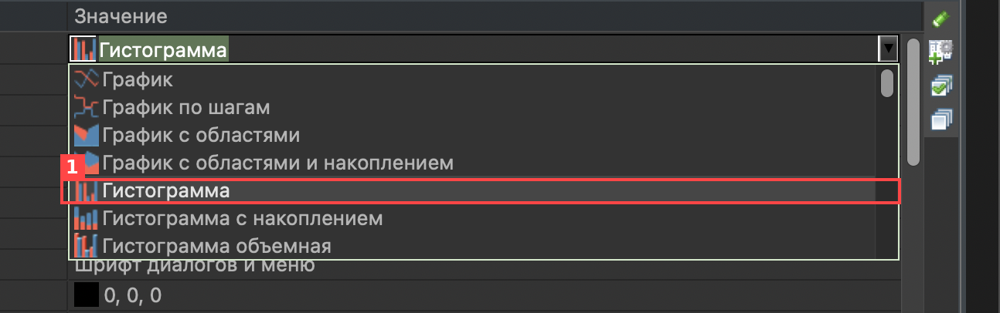
| № | Что это |
|---|---|
| 1 | «Гистограмма» — вертикальные столбики. Выше: «График» (линия), ниже: варианты с накоплением, объёмные |
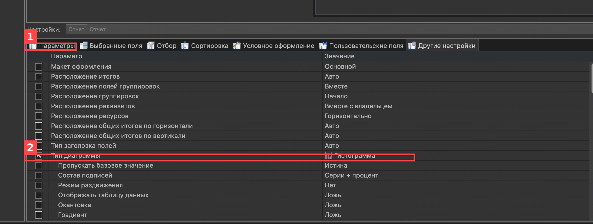
| № | Что это |
|---|---|
| 1 | Вкладка «Параметры» есть → уровень «Отчет». Открыты «Другие настройки» |
| 2 | Строка «Тип диаграммы» = «Гистограмма», галка включена |
Почему на уровне «Отчет», а не диаграммы: настройка на уровне «Отчет» — значение по умолчанию для всех диаграмм отчёта. Работает и так, и так. Если поставить на уровне диаграммы — действует только на неё и перекрывает «Отчет». Галка слева обязательна: без неё строка серая и не применяется — будет тип по умолчанию.
Сохрани (Cmd+S). Сохраняем, потому что экспорт в шаге 7 берёт только сохранённую версию.
Шаг 7. Выгрузить отчёт в XML
Зачем. Пользователь открывает только файл .erf, а EDT такой файл не создаёт — он умеет выгрузить отчёт в XML-исходники. Это первая половина пути к файлу.
Что получим: папку ~/1C/ext/ExternalReports с XML-файлами.
Что делаем. Правый клик по проекту ПриходыПоТоварам в навигаторе → «Экспорт…».
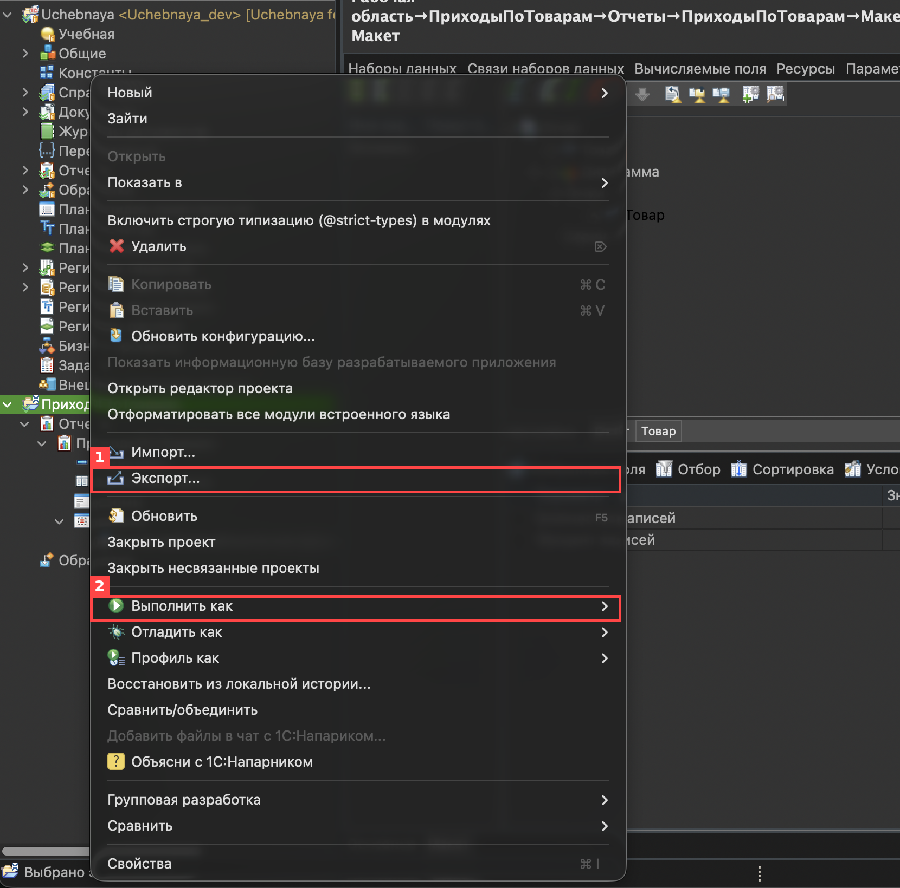
| № | Что это |
|---|---|
| 1 | «Экспорт…» — выгрузка в файлы |
| 2 | «Выполнить как» — не подходит для внешнего отчёта (шаг 8) |
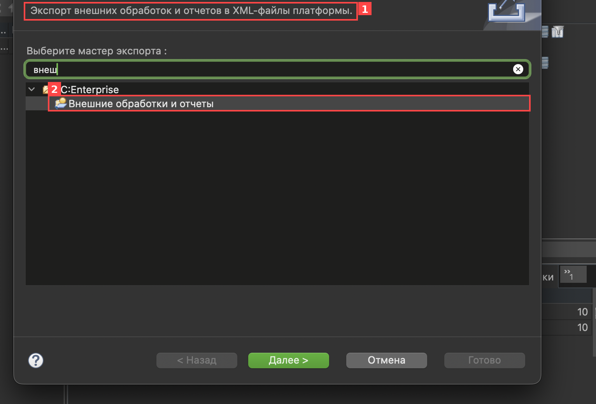
| № | Что это |
|---|---|
| 1 | Заголовок: «Экспорт внешних обработок и отчетов в XML-файлы платформы». Сразу видно: на выходе XML, не .erf |
| 2 | «1C:Enterprise» → «Внешние обработки и отчеты». В фильтре достаточно набрать «внеш» |
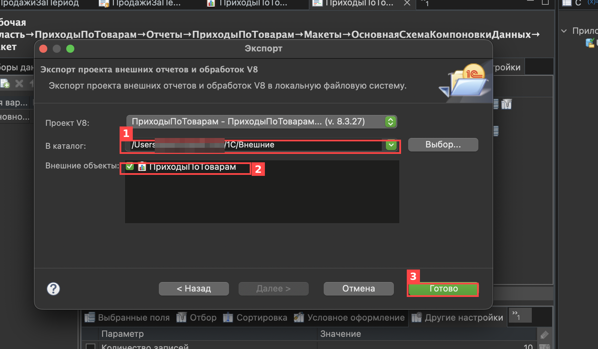
| № | Что это |
|---|---|
| 1 | «В каталог». Указывай /Users/<ты>/1C/ext. На скрине старый путь …/1C/Внешние — с ним сборка падает: 1С на Mac не любит русские буквы в пути (ловушка 5) |
| 2 | Галка на отчёте ПриходыПоТоварам |
| 3 | «Готово». Если файлы уже есть — EDT спросит про замену, соглашайся |
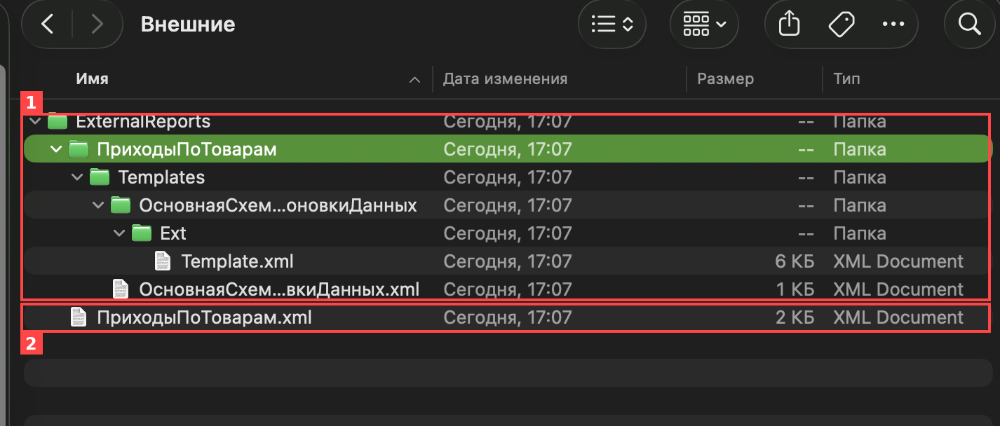
| № | Что это |
|---|---|
| 1 | Папка ExternalReports/ПриходыПоТоварам/ — макет (наша схема СКД) и его XML |
| 2 | ПриходыПоТоварам.xml — корневой файл отчёта. По нему платформа собирает .erf |
Это и есть исходники. Открыть их в предприятии нельзя.
Шаг 8. Почему не «Выполнить как»
Зачем. В EDT есть «Выполнить как», и его хочется попробовать первым. Здесь видно, почему он не подходит.
Этот шаг повторять не обязательно — достаточно прочитать.
Что делаем. Ничего — это разбор, чтобы не тратить на это время.
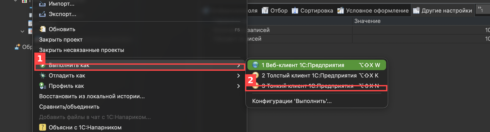
| № | Что это |
|---|---|
| 1 | «Выполнить как» |
| 2 | «Тонкий клиент 1С:Предприятия» |
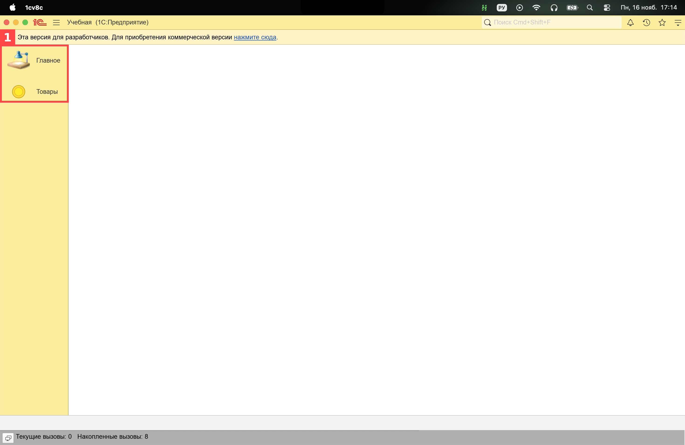
| № | Что это |
|---|---|
| 1 | Только разделы конфигурации: «Главное», «Товары». Внешнего отчёта нет |
Почему: «Выполнить как» запускает базу базового проекта Uchebnaya_dev. Внешний отчёт не часть конфигурации, в интерфейс он не попадает. Его нужно отдельно собрать в .erf и открыть.
Шаг 9. Собрать .erf скриптом
Зачем. Из XML файл .erf умеет собирать только платформа 1С. Команда длинная, поэтому её запускает скрипт.
Что получим: файл ~/1C/ext/build/PrihodyPoTovaram.erf.
Что делаем. Двойной клик по ~/1C/build-erf.command. Откроется окно Терминала, в конце — «Собрано файлов: 1» и откроется папка с результатом. Окно закрыть клавишей Enter.
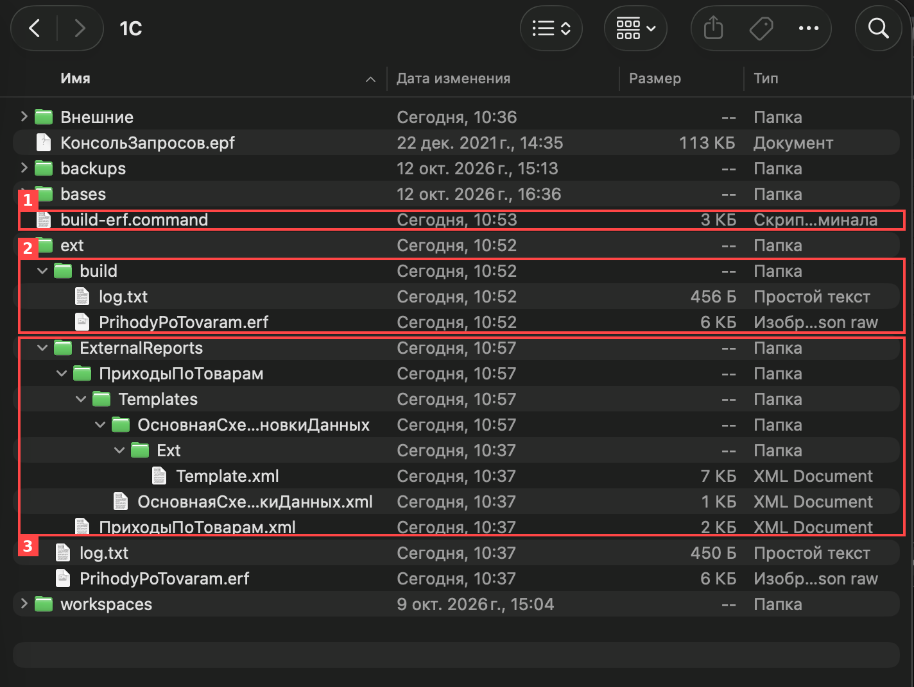
~/1C после сборки| № | Что это |
|---|---|
| 1 | build-erf.command — скрипт сборки. Запускаешь двойным кликом |
| 2 | ext/build/ — результат: PrihodyPoTovaram.erf и log.txt (журнал 1С) |
| 3 | ext/ExternalReports/ — XML из шага 7, отсюда скрипт берёт исходники |
Ниже, в корне ext, лежат log.txt и PrihodyPoTovaram.erf — остались от первой ручной сборки. Их можно удалить.
Что делает скрипт, по шагам:
- Находит установленную платформу 1С (самую новую версию в
/Applications/1cv8.localized/). - Копирует файл базы
1Cv8.1CDиз~/1C/bases/Uchebnaya_devво временную папку. Зачем: пока открыт EDT, база занята, и 1С отказывается к ней подключаться. С копией EDT можно не закрывать. - Для каждого XML в
ext/ExternalReportsиext/ExternalDataProcessors: - переводит имя в транслит:
ПриходыПоТоварам→PrihodyPoTovaram; - запускает 1С в пакетном режиме: «загрузи отчёт из XML и сохрани как
.erf»; - проверяет, появился ли файл. Да — «готово», нет — показывает журнал 1С.
- Удаляет временную копию базы.
- Пишет, сколько файлов собрано, и открывает папку
build.
Зачем 1С вообще нужна база: конфигуратор не запускается без базы. И отчёт ссылается на объекты конфигурации (Справочник.Товары, Документ.ПриходТовара) — значит, конфигурация базы должна их содержать.
Главная строка скрипта — то, что раньше набирали в Терминале руками:
1cv8 DESIGNER /F <база> /LoadExternalDataProcessorOrReportFromFiles <отчёт.xml> <отчёт.erf> /Out <журнал>
Если в Терминале видишь Abort trap: 6 или Segmentation fault, а ниже «готово» — всё в порядке. 1С на Mac иногда падает при закрытии, уже после сохранения файла (ловушка 6). Смотри на слово «готово» и на файл в build.
Для другой базы (например, ZGU_demo в 4.4б) открой скрипт в «TextEdit» и поменяй одну строку в начале:
BASE="$HOME/1C/bases/Uchebnaya_dev"
на путь к папке нужной базы.
Порядок работы теперь всегда такой:
| # | Где | Что |
|---|---|---|
| 1 | EDT | Правишь отчёт, Cmd+S |
| 2 | EDT | Правый клик по проекту → «Экспорт…» → ~/1C/ext, заменить файлы |
| 3 | Finder | Двойной клик ~/1C/build-erf.command |
| 4 | Предприятие | «Файл» → «Открыть» → ~/1C/ext/build/….erf |
XML каждый раз создаётся заново шагом 2 — вручную их не трогаешь.
Шаг 10. Открыть отчёт в предприятии
Зачем. Проверить отчёт так, как его увидит клиент: файл открыт в базе, данные настоящие.
Что получим: форму отчёта с периодом, таблицей и диаграммой (раздел 3).
Что делаем. Запусти базу Uchebnaya_dev (из EDT через «Выполнить как» у проекта Uchebnaya или из стартера 1С). Меню (кнопка ☰ справа вверху) → «Файл» → «Открыть…» (Cmd+O) → ~/1C/ext/build/PrihodyPoTovaram.erf.
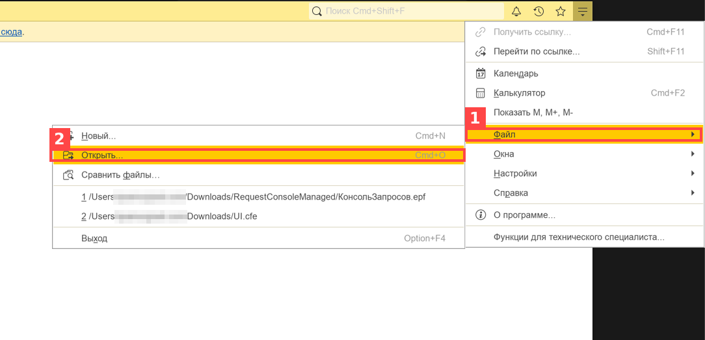
| № | Что это |
|---|---|
| 1 | «Файл» |
| 2 | «Открыть…» (Cmd+O) |
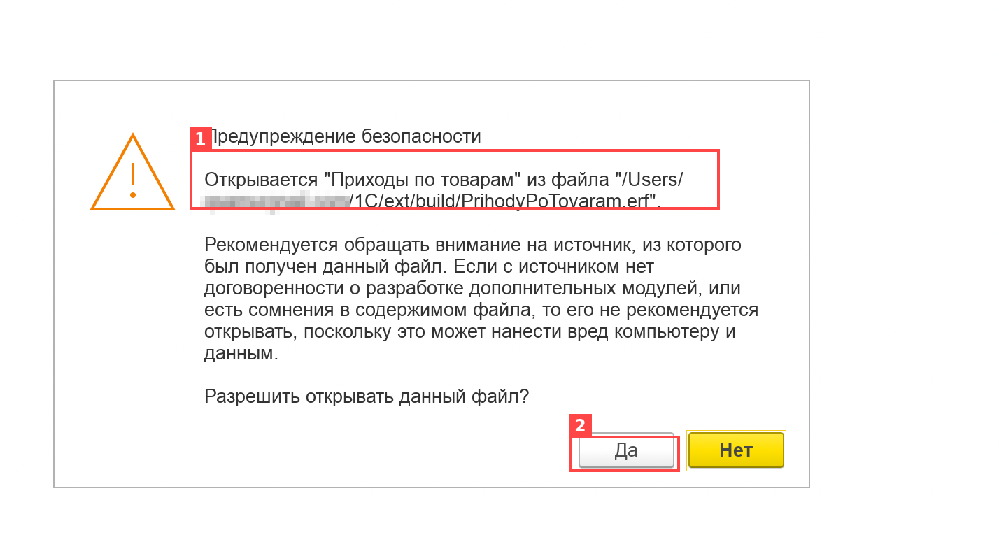
| № | Что это |
|---|---|
| 1 | Какой файл открывается и откуда |
| 2 | «Да» — открыть |
Почему спрашивает: внешний отчёт может содержать код, а код выполняется в базе. 1С предупреждает при каждом открытии файла через «Файл» → «Открыть». В рабочих базах внешние отчёты подключают через БСП (4.4б), там доступ контролирует администратор.
3. Итоговый вид
Период 01.07.2026 – 31.12.2026, «Сформировать».
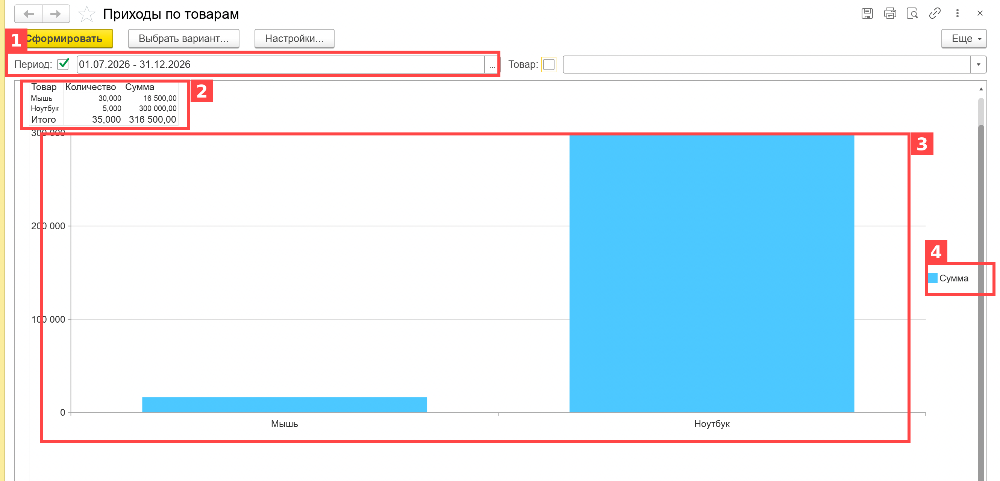
| № | Что это |
|---|---|
| 1 | Период — один параметр «Стандартный период». НачалоПериода и КонецПериода скрыты |
| 2 | Таблица: группировка Товар и «Итого» |
| 3 | Гистограмма: столбик на каждый товар, высота — Сумма |
| 4 | Легенда «Сумма» — одно выбранное поле, один цвет |
Проверка цифрами:
| Товар | Количество | Сумма | Цена = Сумма / Количество |
|---|---|---|---|
| Мышь | 30 | 16 500,00 | 550 |
| Ноутбук | 5 | 300 000,00 | 60 000 |
| Итого | 35 = 30 + 5 | 316 500,00 = 16 500 + 300 000 | — |
На диаграмме столбик Ноутбука доходит до 300 000, столбик Мыши — 16 500, примерно 1/18 высоты. Совпадает с таблицей.
Теперь отбор Товар = Ноутбук:
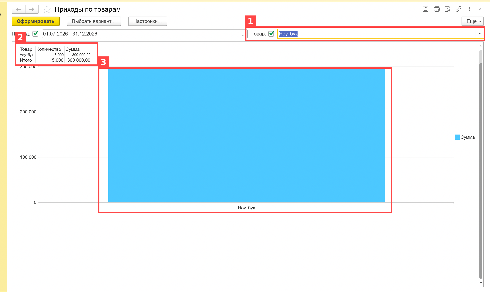
| № | Что это |
|---|---|
| 1 | Отбор «Товар» = Ноутбук, галка включена |
| 2 | В таблице только Ноутбук: 5 / 300 000,00, Итого то же |
| 3 | На диаграмме тоже только Ноутбук |
Отбор действует и на таблицу, и на диаграмму, потому что стоит на уровне «Отчет».
| Без отбора | Отбор Ноутбук | |
|---|---|---|
| Строк в таблице | 2 | 1 |
| Итого Количество | 35 | 5 |
| Итого Сумма | 316 500,00 | 300 000,00 |
| Столбиков | 2 | 1 |
4. Ловушки
1. В поле «Имя» отчёта вписано имя проекта.
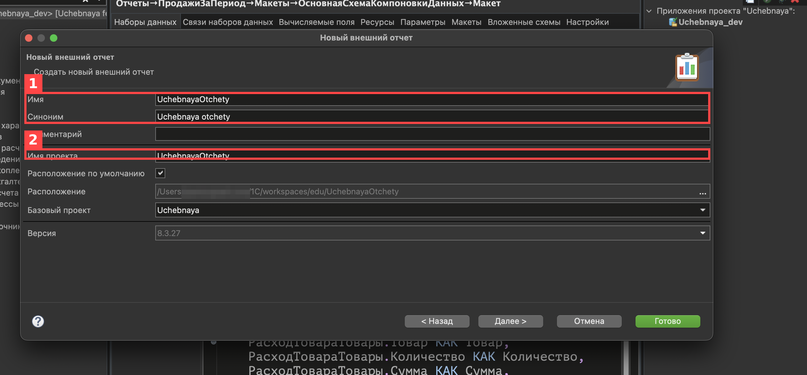
| № | Что это |
|---|---|
| 1 | Имя UchebnayaOtchety, синоним «Uchebnaya otchety» — это должно было стать именем проекта, а попало в имя отчёта |
| 2 | Имя проекта EDT подставил то же |
- Симптом: в предприятии отчёт называется «Uchebnaya otchety», а файл —
UchebnayaOtchety.erf. - Причина: поле «Имя» в мастере — это имя отчёта, а не проекта. Имя проекта ниже, и EDT заполняет его сам.
- Исправление: удалить проект (правый клик → «Удалить», галка «Удалить содержимое проекта на диске») и создать заново. Если в EDT проекта уже нет, а папка
~/1C/workspaces/edu/UchebnayaOtchetyосталась — удали её в Finder.
2. Пустой базовый проект и версия 8.5.1.
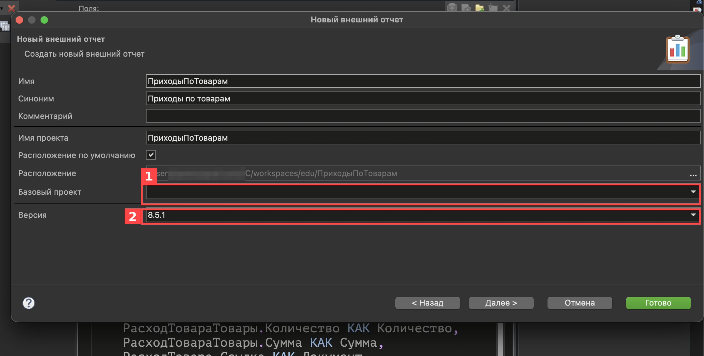
| № | Что это |
|---|---|
| 1 | «Базовый проект» пустой |
| 2 | «Версия» 8.5.1 — подставилась самая новая, а у тебя 8.3.27 |
- Симптом: в конструкторе запроса нет документов и справочников; файл не собирается или не открывается твоей платформой.
- Причина: без базового проекта отчёт не знает про объекты
Uchebnaya. Версия выше установленной платформы — 8.3.27 не понимает формат 8.5. - Исправление: базовый проект
Uchebnaya, версия8.3.27.
3. «Имя проекта конфликтует с ресурсом на диске».
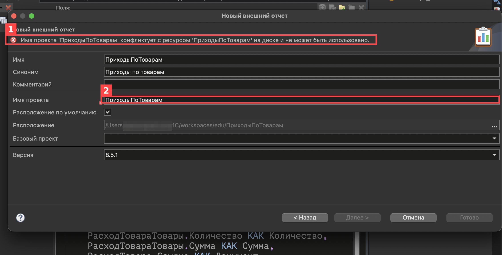
| № | Что это |
|---|---|
| 1 | Текст ошибки: проект ПриходыПоТоварам конфликтует с ресурсом на диске |
| 2 | Имя проекта, которое уже занято папкой |
- Симптом: кнопки «Далее» и «Готово» неактивны.
- Причина: проект удалили из EDT без галки «Удалить содержимое», и папка с тем же именем осталась в рабочей области.
- Исправление: удали папку
~/1C/workspaces/edu/ПриходыПоТоварамв Finder или удаляй проект сразу с содержимым.
4. База занята.
- Симптом: при ручной сборке в журнале 1С ошибка блокировки базы,
.erfне появился. - Причина: EDT держит базу открытой, второй процесс 1С к ней не подключается.
- Исправление: скрипт уже работает с копией базы. Если собираешь руками — закрой EDT или используй копию.
5. Русские буквы в пути.
- Симптом: 1С падает сразу, в Терминале
malloc … abort, файла нет. - Причина: платформа на Mac не справляется с кириллицей в пути к XML и
.erf. - Исправление: выгрузка только в
~/1C/ext. Имя.erfскрипт сам делает транслитом.
6. Abort trap: 6 после «готово».
- Симптом: в окне Терминала страшные строки об аварийном завершении.
- Причина: 1С падает при выходе, уже после сохранения файла.
- Исправление: ничего. Проверяй строку «готово» и файл в
ext/build.
7. Исправил отчёт, а в предприятии старая версия.
- Симптом: правки в EDT не видны.
- Причина: сохранил в EDT, но не сделал «Экспорт» или не запустил сборку.
.erfостался прежним. - Исправление: весь цикл:
Cmd+S→ «Экспорт» → скрипт → открыть файл заново. Если форма отчёта уже была открыта — закрой её и открой файл ещё раз.
8. Отбор работает в таблице, а диаграмма показывает всё.
- Симптом: в таблице только Ноутбук, на диаграмме оба товара.
- Причина: отбор поставлен на уровне группировки
Товар. Диаграмма — отдельный элемент структуры, отбор группировки её не касается. - Исправление: отбор — на уровне «Отчет» (есть вкладка «Параметры»).
9. На диаграмме <Авто>.
- Симптом: два столбика на товар и легенда «Количество, Сумма»; столбики количества почти не видны.
- Причина:
<Авто>берёт все выбранные поля уровня «Отчет». - Исправление: у диаграммы в «Выбранных полях» оставить только
Сумма.
10. Ждёшь отчёт после «Выполнить как».
- Симптом: предприятие открылось, отчёта нигде нет.
- Причина: запускается база базовой конфигурации, внешний отчёт в неё не входит (шаг 8).
- Исправление: собрать
.erfи открыть через «Файл» → «Открыть».
5. Практика А
Внешний отчёт ОстаткиНаДату. Без раздела 2.
- Новый проект внешнего отчёта, базовый проект
Uchebnaya, версия8.3.27. - Источник — регистр накопления
ОстаткиТоваров, виртуальная таблица остатков на дату. ПараметрДатапользователь выбирает на форме. - Таблица:
Товар, остаток количества, «Итого». - Диаграмма: тип «Круговая», точки —
Товар, значение — остаток количества. - Выгрузить в
~/1C/ext, собрать скриптом, открыть в предприятии. - Проверка: остатки на 31.12.2026 = приходы минус расходы по каждому товару. Сверь с отчётом
ДвиженияТоваров.
После этой практики в ext/build будет два файла — скрипт собирает всё, что лежит в ext/ExternalReports.
6. Практика Б
Сквозной проект: внешний отчёт ДиаграммаПродаж.erf.
Что должно получиться:
- проект внешнего отчёта
ДиаграммаПродаж, базовый —Uchebnaya; - данные — табличная часть
РасходТовара.Товары, только проведённые документы за период; - на форме: «Период» (стандартный период) и отбор «Товар» в быстром доступе;
- таблица:
Товар,Количество,Сумма, строка «Итого»; - гистограмма: столбик на каждый товар, высота —
Сумма; - файл после сборки:
~/1C/ext/build/DiagrammaProdazh.erf.
Проверка:
- за тот же период итоги совпадают с отчётом
ПродажиЗаПериодиз 4.1–4.3; - отбор по одному товару меняет и таблицу, и диаграмму.
Ответь себе: почему клиенту с типовой ЗГУ на поддержке делают внешний отчёт, а не добавляют отчёт в конфигурацию?
Git. Проект внешнего отчёта лежит вне репозитория Uchebnaya. Чтобы он попал в Git, скопируй после сборки в папку репозитория ~/1C/workspaces/edu/Uchebnaya/external/:
- папку
ExternalReportsиз~/1C/ext— исходники XML (их можно загрузить обратно в EDT: «Импорт» → «Внешние обработки и отчеты»); - готовые
.erfиз~/1C/ext/build.
Коммиты:
4.4а: внешний отчёт ПриходыПоТоварам (СКД + диаграмма), сборка .erf скриптом build-erf.command
4.4а: проект — внешний отчёт ДиаграммаПродаж.erf (продажи по товарам, таблица + гистограмма)
7. Справочник
Где что лежит
| Что | Где |
|---|---|
| Проект внешнего отчёта (EDT) | ~/1C/workspaces/edu/ПриходыПоТоварам |
| XML после «Экспорта» | ~/1C/ext/ExternalReports/ |
| Скрипт сборки | ~/1C/build-erf.command |
Готовые .erf / .epf |
~/1C/ext/build/ |
| Журнал последней сборки | ~/1C/ext/build/log.txt |
| База, с которой собирает скрипт | строка BASE= в начале скрипта |
Параметры командной строки 1С — 👀
| Параметр | Что значит |
|---|---|
DESIGNER |
Запустить конфигуратор (в пакетном режиме — без окон) |
/F <папка> |
Файловая база в этой папке |
/S <сервер>\<база> |
Серверная база — вместо /F |
/N <имя> /P <пароль> |
Пользователь и пароль, если в базе есть пользователи |
/LoadExternalDataProcessorOrReportFromFiles <xml> <erf> |
Собрать .erf/.epf из XML |
/DumpExternalDataProcessorOrReportToFiles <xml> <erf> |
Обратно: разобрать .erf в XML. Пригодится, чтобы взять чужой отчёт в EDT |
/Out <файл> |
Куда писать журнал |
Типы диаграмм — 👀
| Тип | Когда брать |
|---|---|
| Гистограмма | Сравнить значения: продажи по товарам |
| Круговая | Доли от целого: какой товар сколько процентов выручки |
| График | Изменение во времени: продажи по месяцам (точки — период) |
| С накоплением | Сравнить итоги и состав одновременно (нужны серии) |
Если перенесёшь скрипт на другой Mac — 👀
Один раз в Терминале, иначе двойной клик не сработает:
chmod +x ~/1C/build-erf.command && xattr -c ~/1C/build-erf.command
chmod +x разрешает запуск, xattr -c снимает пометку «скачано из интернета».
Конфигуратор вместо EDT — 👀
В Конфигураторе: «Файл» → «Новый» → «Внешний отчет», правишь, «Сохранить» — и сразу получаешь .erf, без выгрузки и сборки. Но исходников для Git нет — только двоичный файл. Поэтому основной путь — EDT.